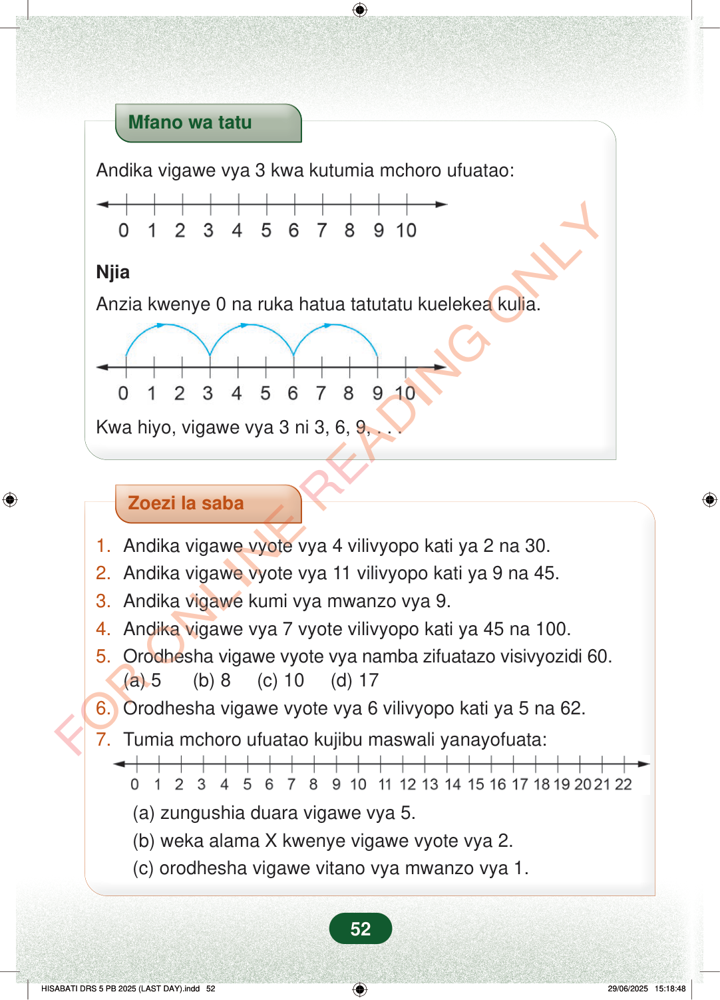

Mfano wa tatuAndika vigawe vya 3 kwa kutumia mchoro ufuatao:NjiaAnzia kwenye 0 na ruka hatua tatutatu kuelekea kulia.Kwa hiyo, vigawe vya 3 ni 3, 6, 9, . . .Zoezi la saba1.Andika vigawe vyote vya 4 vilivyopo kati ya 2 na 30.2.Andika vigawe vyote vya 11 vilivyopo kati ya 9 na 45.3.Andika vigawe kumi vya mwanzo vya 9.4.Andika vigawe vya 7 vyote vilivyopo kati ya 45 na 100.5.Orodhesha vigawe vyote vya namba zifuatazo visivyozidi 60.(a) 5 (b) 8 (c) 10 (d) 176.Orodhesha vigawe vyote vya 6 vilivyopo kati ya 5 na 62.7.Tumia mchoro ufuatao kujibu maswali yanayofuata:(a) zungushia duara vigawe vya 5.(b) weka alama X kwenye vigawe vyote vya 2.(c) orodhesha vigawe vitano vya mwanzo vya 1.52
Mfano wa tatu
Andika vigawe vya 3 kwa kutumia mchoro ufuatao:
Njia
Anzia kwenye 0 na ruka hatua tatutatu kuelekea kulia.
Kwa hiyo, vigawe vya 3 ni 3, 6, 9, . . .
Zoezi la saba
1. Andika vigawe vyote vya 4 vilivyopo kati ya 2 na 30. 2. Andika vigawe vyote vya 11 vilivyopo kati ya 9 na 45. 3. Andika vigawe kumi vya mwanzo vya 9. 4. Andika vigawe vya 7 vyote vilivyopo kati ya 45 na 100. 5. Orodhesha vigawe vyote vya namba zifuatazo visivyozidi 60. (a) 5 (b) 8 (c) 10 (d) 17 6. Orodhesha vigawe vyote vya 6 vilivyopo kati ya 5 na 62.
7. Tumia mchoro ufuatao kujibu maswali yanayofuata:
(a) zungushia duara vigawe vya 5. (b) weka alama X kwenye vigawe vyote vya 2. (c) orodhesha vigawe vitano vya mwanzo vya 1.
52
Mfano wa tatuAndika vigawe vya 3 kwa kutumia mchoro ufuatao:Mstari wa namba kutoka 0 hadi 10 wenye mishale pande zote.NjiaAnzia kwenye 0 na ruka hatua tatutatu kuelekea kulia.Mstari wa namba kutoka 0 hadi 10 wenye miruko ya 3: kutoka 0 hadi 3, 3 hadi 6, na 6 hadi 9.Kwa hiyo, vigawe vya 3 ni 3, 6, 9, . . .Zoezi la saba1.Andika vigawe vyote vya 4 vilivyopo kati ya 2 na 30.2.Andika vigawe vyote vya 11 vilivyopo kati ya 9 na 45.3.Andika vigawe kumi vya mwanzo vya 9.4.Andika vigawe vya 7 vyote vilivyopo kati ya 45 na 100.5.Orodhesha vigawe vyote vya namba zifuatazo visivyozidi 60.(a) 5(b) 8(c) 10(d) 176.Orodhesha vigawe vyote vya 6 vilivyopo kati ya 5 na 62.7.Tumia mchoro ufuatao kujibu maswali yanayofuata:Mstari wa namba kutoka 0 hadi 22 wenye mishale pande zote.(a) zungushia duara vigawe vya 5.(b) weka alama X kwenye vigawe vyote vya 2.7(c)orodhesha vigawe vitano vya mwanzo vya 1.